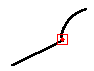
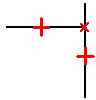

Connect command
Use the Connect command  to connect two elements such that:
to connect two elements such that:
-
A keypoint of one element remains connected to a keypoint of another element. For example, you can connect the endpoint of one element to the endpoint of another element.

-
A keypoint of one element remains connected to any point along another element. For example, you can connect the endpoint of one element to a random location on another element.

Notice that the relationship symbols are different for an endpoint connect relationship and a point along connect relationship.
Connect relationships and profile groups
You can also use a connect relationship (A) to specify that keypoint on one element (B) must remain connected to an endpoint connected series of elements (C) through (F), which defines a profile group. For more information on profile groups, see the Working with profile groups Help topic.

Connect relationships and assembly components
You can also use a connect relationship to position a 3D component in an assembly relative to an assembly sketch (layout).
For more information on positioning assembly components using dimensions and 2D relationships, see the Assembly layouts Help topic.